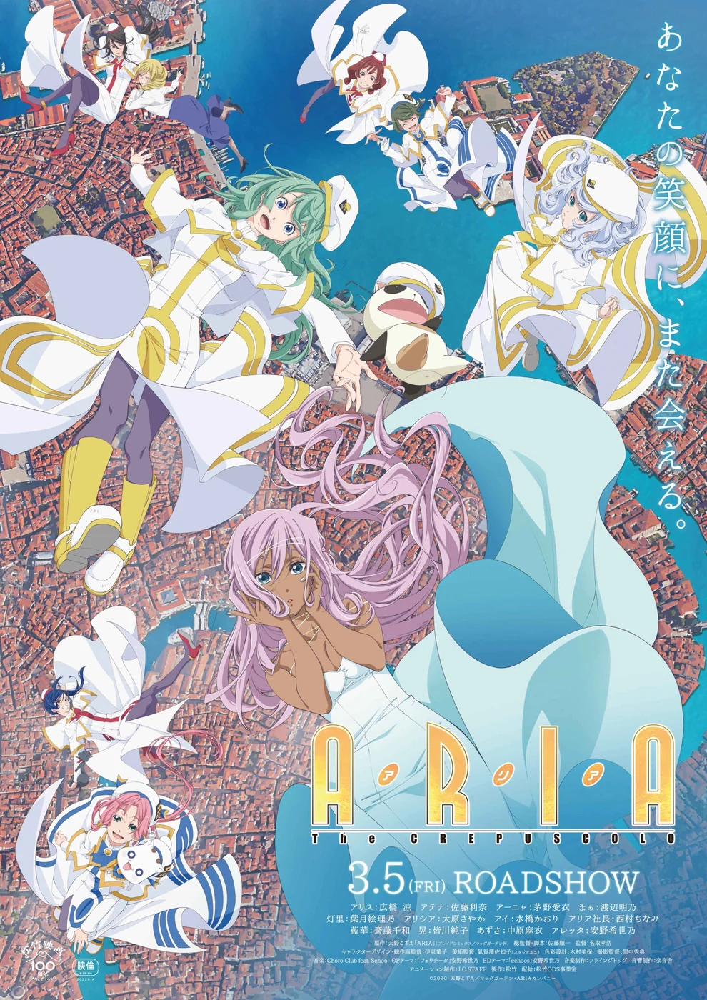
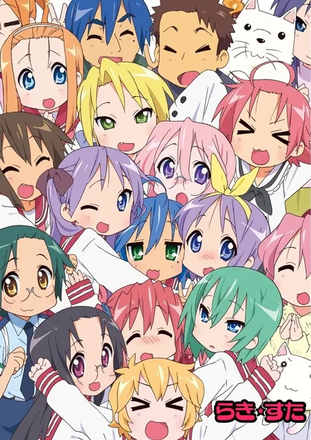
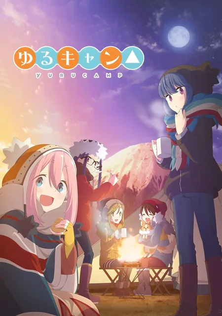
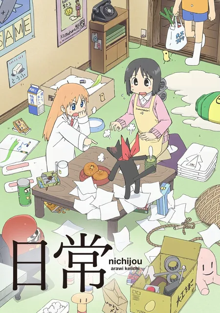
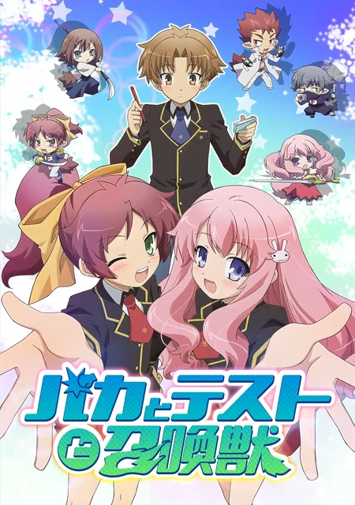
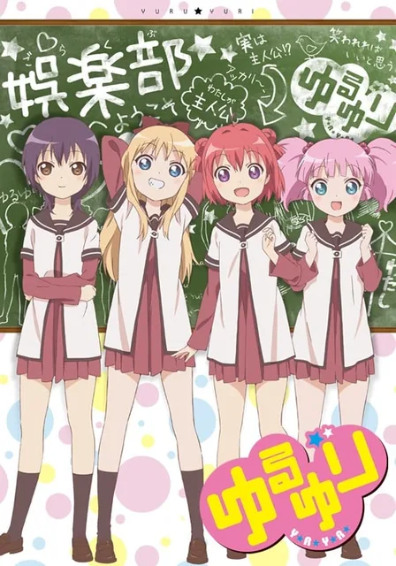
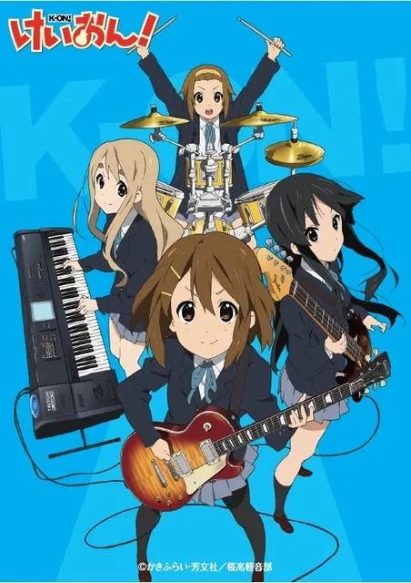
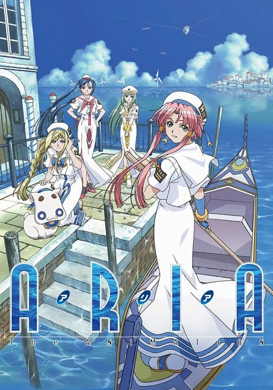

日常最高
世界不必每天被拯救。把饭煮好、把作业写完、把今天过完，也值得一集。
139 部
ANIME COMMONPLACE BOOK / 2026
遥阔湛蓝，
正好装下日常。
我是 Aquamarine，2007 年的双鱼座，来自江苏。把动画当作生活的底色：喜欢京都动画的光、SHAFT 的对话框、芳文社的女孩，以及《水星领航员》里慢得刚好的日子。
全站记录 · 其中动画 221 部 / 看过 170 部





ABOUT / 自我介绍
一个把动画当成生活注脚的人。喜欢不必拯救世界的故事，也喜欢看完之后，屏幕暗下来那几秒的安静。
我是 Aquamarine，2007 年 3 月 7 日出生，双鱼座，来自江苏。名字是一片海的颜色，人也差不多：大部分时候温和，偶尔起浪。
2026 年 5 月 2 日加入 Bangumi，开始给看过的动画打星、写短评。看得最多的是日常、治愈和轻百合；喜欢芳文社的女孩、京都动画的光、SHAFT 的对话框，以及《水星领航员》里那种慢得刚好的生活。
在天使动漫，我是水天使，头衔「骑士王」，签名「遥阔湛蓝」，自我介绍只有四个字：一个好人。
从这部番开始喜欢看空气系。
—— 给《幸运星》的短评 · 2026.05.16
《笨蛋，测验，召唤兽》·《学生会的一己之见》·《学生会也有洞！》
第一次把看到的动画，认真地放进收藏里。
《你的名字。》是二次元的入口，《幸运星》是空气系的起点。
25 集一口气看完，还嫌不够长。
成为水天使，头衔「骑士王」，签名「遥阔湛蓝」。
在《剧场版 白箱》的片尾曲里，完成了第 170 次“看完”。
TASTE / 口味
下面这些词，来自 170 部看过的动画。它们比评分更诚实地说明了我为什么按下播放键。
字号 = 在 170 部看过的动画里出现的频率
世界不必每天被拯救。把饭煮好、把作业写完、把今天过完，也值得一集。
比恋爱轻一点，比友情黏一点。是并肩回家时，谁也没有先说出口的那句话。

93 部逆光、蝉鸣、走廊尽头的一扇窗。京都动画把“普通”拍成了我想住进去的夏天。

24 部《水星领航员》教我：日子可以像运河一样，不赶时间。慢，不是停下来。

7 部FIRST LOVES / 私藏
排名不分先后，但每一部都改变了我看动画的方式。前三句是当时留在 Bangumi 的短评，后三句是现在补上的注。
ARCHIVE / 书架
按 Bangumi 收藏整理。评分是我的，偏心也是。点开封面，可以看到当时留下的短评，或者只是再看一眼那张脸。
BY THE NUMBERS / 数据
数字不会解释喜欢，但它会留下形状。比如 8 分是绝对多数，比如 2013、2014、2017 各看了 15 部。
TOTAL EPISODES
1,357集
按每集 24 分钟粗算。足够从江苏坐船去威尼斯，再慢慢回来。
MY AVERAGE
8.02/10
打分偏宽容：8 分是绝对多数。喜欢的时候，不太吝啬星星。
RATING DISTRIBUTION
WATCHED BY YEAR
2013 / 2014 / 2017 各 15 部，是我的补番峰值。
COLOUR OF THE SHELF
ELSEWHERE / 别处
如果你也喜欢《水星领航员》《轻音少女》《向阳素描》，或者只是想找个人聊聊日常番，欢迎来敲门。
记录动画、打星、写短评的地方。签名是「鱿鱼之魂不会没用」，我的 246 部收藏、185 次完成，都留在这里。
在这里是水天使。头衔「骑士王」，签名「遥阔湛蓝」，自我介绍只有四个字：一个好人。
MESSAGE IN A BOTTLE
可以是一部此刻最想记住的动画，也可以是今天的心情。瓶子只会停在这台设备的浏览器里，像一段不会漂远的记忆。